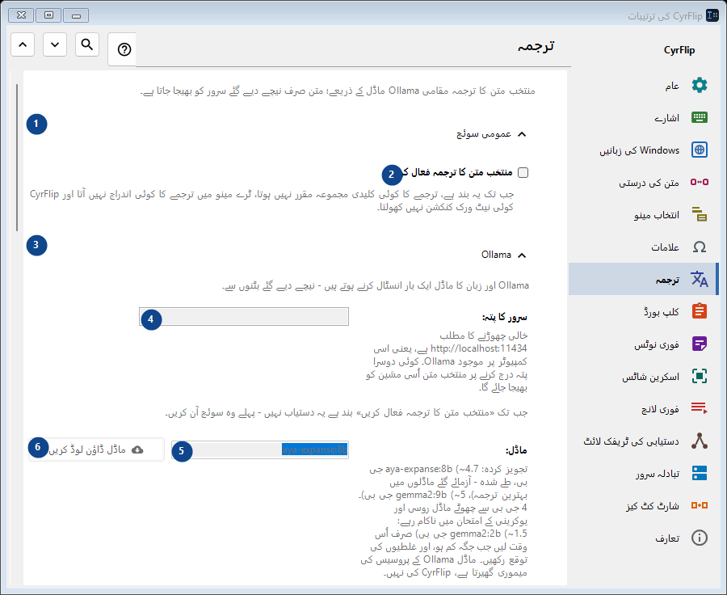
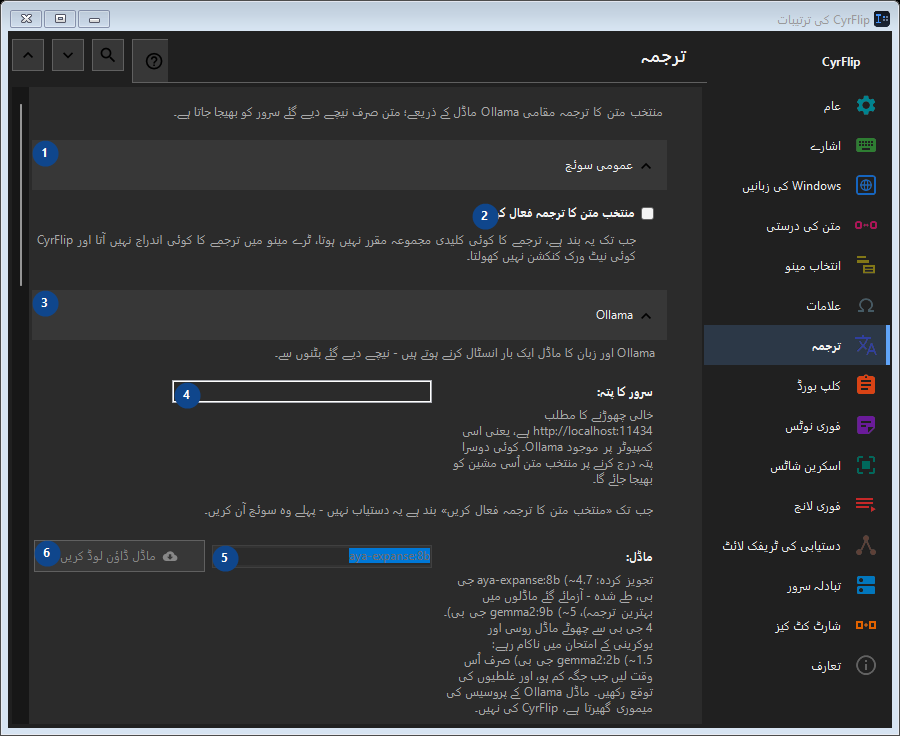

ترجمہ
مقصد
منتخب متن کا ترجمہ مقامی Ollama ماڈل کے ذریعے؛ متن صرف نیچے دیے گئے سرور کو بھیجا جاتا ہے۔


استعمال کی ترتیب
ترتیبات فوراً لاگو ہوتی ہیں۔ کوئی لازمی ترتیب نہیں؛ نیچے کے گروپ استعمال کریں۔
عناصر
1. عمومی سوئچ
درج شدہ کارروائی کے لیے یہ حکم استعمال کریں۔ قبول کرنے سے پہلے تصدیق پڑھیں۔
آپ کے شارٹ کٹ2. منتخب متن کا ترجمہ فعال کریں
جب تک یہ بند ہے، ترجمے کا کوئی کلیدی مجموعہ مقرر نہیں ہوتا، ٹرے مینو میں ترجمے کا کوئی اندراج نہیں آتا اور CyrFlip کوئی نیٹ ورک کنکشن نہیں کھولتا۔
آپ کے شارٹ کٹ3. Ollama
درج شدہ کارروائی کے لیے یہ حکم استعمال کریں۔ قبول کرنے سے پہلے تصدیق پڑھیں۔
آپ کے شارٹ کٹ4. سرور کا پتہ
جب تک «منتخب متن کا ترجمہ فعال کریں» بند ہے یہ دستیاب نہیں - پہلے وہ سوئچ آن کریں۔ یہ عنصر ابھی دستیاب نہیں۔ پہلے خصوصیت فعال کریں یا اندراج منتخب کریں۔
آپ کے شارٹ کٹ5. ماڈل
جب تک «منتخب متن کا ترجمہ فعال کریں» بند ہے یہ دستیاب نہیں - پہلے وہ سوئچ آن کریں۔ یہ عنصر ابھی دستیاب نہیں۔ پہلے خصوصیت فعال کریں یا اندراج منتخب کریں۔
آپ کے شارٹ کٹ6. ماڈل ڈاؤن لوڈ کریں - ماڈل
جب تک «منتخب متن کا ترجمہ فعال کریں» بند ہے یہ دستیاب نہیں - پہلے وہ سوئچ آن کریں۔ یہ عنصر ابھی دستیاب نہیں۔ پہلے خصوصیت فعال کریں یا اندراج منتخب کریں۔
آپ کے شارٹ کٹ7. Ollama انسٹال کریں
جب تک «منتخب متن کا ترجمہ فعال کریں» بند ہے یہ دستیاب نہیں - پہلے وہ سوئچ آن کریں۔ یہ عنصر ابھی دستیاب نہیں۔ پہلے خصوصیت فعال کریں یا اندراج منتخب کریں۔
آپ کے شارٹ کٹ8. Ollama چلائیں
جب تک «منتخب متن کا ترجمہ فعال کریں» بند ہے یہ دستیاب نہیں - پہلے وہ سوئچ آن کریں۔ یہ عنصر ابھی دستیاب نہیں۔ پہلے خصوصیت فعال کریں یا اندراج منتخب کریں۔
آپ کے شارٹ کٹ9. کنکشن جانچیں
جب تک «منتخب متن کا ترجمہ فعال کریں» بند ہے یہ دستیاب نہیں - پہلے وہ سوئچ آن کریں۔ یہ عنصر ابھی دستیاب نہیں۔ پہلے خصوصیت فعال کریں یا اندراج منتخب کریں۔
آپ کے شارٹ کٹ10. منسوخ کریں
درج شدہ کارروائی کے لیے یہ حکم استعمال کریں۔ قبول کرنے سے پہلے تصدیق پڑھیں۔ یہ عنصر ابھی دستیاب نہیں۔ پہلے خصوصیت فعال کریں یا اندراج منتخب کریں۔
آپ کے شارٹ کٹ11. ترجمے کے وقت Ollama خودکار طور پر چلائیں
جب تک «منتخب متن کا ترجمہ فعال کریں» بند ہے یہ دستیاب نہیں - پہلے وہ سوئچ آن کریں۔ یہ عنصر ابھی دستیاب نہیں۔ پہلے خصوصیت فعال کریں یا اندراج منتخب کریں۔
آپ کے شارٹ کٹ12. ماڈل کو میموری میں رکھیں (منٹ)
جب تک «منتخب متن کا ترجمہ فعال کریں» بند ہے یہ دستیاب نہیں - پہلے وہ سوئچ آن کریں۔ یہ عنصر ابھی دستیاب نہیں۔ پہلے خصوصیت فعال کریں یا اندراج منتخب کریں۔
آپ کے شارٹ کٹ13. Ollama اور زبان کا ماڈل ایک بار انسٹال کرنے ہوتے ہیں - نیچے دیے گئے بٹنوں سے۔
ساتھ کے لیبل کے مطابق قدر منتخب یا درج کریں۔ آگے بڑھنے سے پہلے جانچیں۔ یہ عنصر ابھی دستیاب نہیں۔ پہلے خصوصیت فعال کریں یا اندراج منتخب کریں۔
آپ کے شارٹ کٹ14. ماڈل لوڈ ہونے کا زیادہ سے زیادہ انتظار (سیکنڈ)
جب تک «منتخب متن کا ترجمہ فعال کریں» بند ہے یہ دستیاب نہیں - پہلے وہ سوئچ آن کریں۔ یہ عنصر ابھی دستیاب نہیں۔ پہلے خصوصیت فعال کریں یا اندراج منتخب کریں۔
آپ کے شارٹ کٹ15. Ollama اور زبان کا ماڈل ایک بار انسٹال کرنے ہوتے ہیں - نیچے دیے گئے بٹنوں سے۔
ساتھ کے لیبل کے مطابق قدر منتخب یا درج کریں۔ آگے بڑھنے سے پہلے جانچیں۔ یہ عنصر ابھی دستیاب نہیں۔ پہلے خصوصیت فعال کریں یا اندراج منتخب کریں۔
آپ کے شارٹ کٹ16. ترجمے کی سمتیں
درج شدہ کارروائی کے لیے یہ حکم استعمال کریں۔ قبول کرنے سے پہلے تصدیق پڑھیں۔
آپ کے شارٹ کٹ17. سمت شامل کریں...
جب تک «منتخب متن کا ترجمہ فعال کریں» بند ہے یہ دستیاب نہیں - پہلے وہ سوئچ آن کریں۔ یہ عنصر ابھی دستیاب نہیں۔ پہلے خصوصیت فعال کریں یا اندراج منتخب کریں۔
آپ کے شارٹ کٹ18. نتیجہ
درج شدہ کارروائی کے لیے یہ حکم استعمال کریں۔ قبول کرنے سے پہلے تصدیق پڑھیں۔
آپ کے شارٹ کٹ19. ترجمہ کلپ بورڈ میں رکھیں
جب تک «منتخب متن کا ترجمہ فعال کریں» بند ہے یہ دستیاب نہیں - پہلے وہ سوئچ آن کریں۔ یہ عنصر ابھی دستیاب نہیں۔ پہلے خصوصیت فعال کریں یا اندراج منتخب کریں۔
آپ کے شارٹ کٹ20. ترجمہ فوراً منتخب متن کی جگہ چسپاں کریں
جب تک «منتخب متن کا ترجمہ فعال کریں» بند ہے یہ دستیاب نہیں - پہلے وہ سوئچ آن کریں۔ یہ عنصر ابھی دستیاب نہیں۔ پہلے خصوصیت فعال کریں یا اندراج منتخب کریں۔
آپ کے شارٹ کٹ21. اصل متن ترجمے کے ساتھ دکھائیں
جب تک «منتخب متن کا ترجمہ فعال کریں» بند ہے یہ دستیاب نہیں - پہلے وہ سوئچ آن کریں۔ یہ عنصر ابھی دستیاب نہیں۔ پہلے خصوصیت فعال کریں یا اندراج منتخب کریں۔
آپ کے شارٹ کٹ22. ونڈو بند کرنے کا وقفہ (سیکنڈ)
جب تک «منتخب متن کا ترجمہ فعال کریں» بند ہے یہ دستیاب نہیں - پہلے وہ سوئچ آن کریں۔ یہ عنصر ابھی دستیاب نہیں۔ پہلے خصوصیت فعال کریں یا اندراج منتخب کریں۔
آپ کے شارٹ کٹ23. جب تک «منتخب متن کا ترجمہ فعال کریں» بند ہے یہ دستیاب نہیں - پہلے وہ سوئچ آن کریں۔
ساتھ کے لیبل کے مطابق قدر منتخب یا درج کریں۔ آگے بڑھنے سے پہلے جانچیں۔ یہ عنصر ابھی دستیاب نہیں۔ پہلے خصوصیت فعال کریں یا اندراج منتخب کریں۔
آپ کے شارٹ کٹ